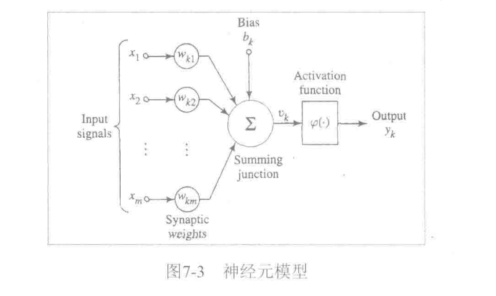
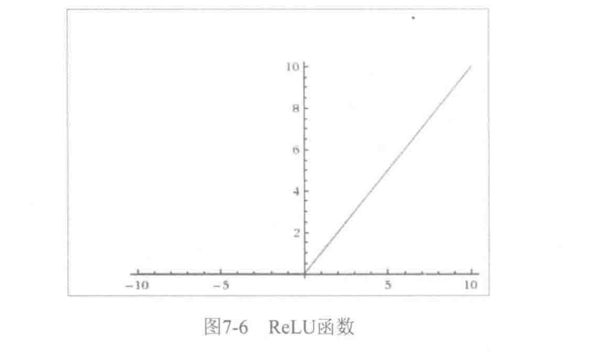

深度神经网络之所以具有丰富的表达能力，除了有深层次的网络之外，还有一个重要因素即非线性处理单元,称为激活函数（Activation Function)或挤压函数（Squashing Function).所以我们必须要关注怎么在caffe中实现这些函数.
下图是一个神经元模型.\(\varphi(.)\)为激活函数.主要作用是将上一层的输入线性组合结果\(u_k\)动态范围压缩到特定值域(例如[-1,1]).一般来说具备非线性处理单元的深度神经网络(大于等于3层),理论上可以逼近任意函数.

其中几个常用的激活函数如下:
1.Sigmoid函数,值域为(0,1)
\[
\varphi(x) = \frac{1}{1+e^{-ax}}
\]

2.tanh函数,值域为(-1,1):
\[
\varphi(x) = \frac{1-e^{-2x}}{1+e^{-2x}}
\]

3.ReLu(Rectified Linear Unit，规整化线性单元)函数,值域为\([0,+ \infty)\),是一种非饱和激活函数.
\[
\varphi(x) = max(0,x)
\]

远不止上面这些激活函数,随着发展,陆续又出现了很多激活函数.这里不多介绍.后面还要自学很多这类相关知识.
神经网络中最大的问题是梯度消失问题（Gradient Vanishing Problem),这在使用 Sigmoid、tanh等饱和激活函数情况下尤为严重(神经网络进行误差反向传播时，各层都要乘以激活函数的一阶导数\(G=e\cdot \varphi'(x) \cdot x\)),梯度每传递一层都会衰减一次,网络层数较多时,梯度G就会不停的衰减至消失),使得训练网络时收敛极慢,而ReLU这类非饱和激活函数收敛速度就快很多.所以学习网络模型中一般都会选用类似ReLu这种死活函数.
接下来我们学习在caffe用代码实现对应层的计算,包括前向传播计算和反向传播计算.Caffe的所有与激活函数相关的Layer类声明在include/caffe/layers文件夹中分别为sigmoid_layer.hpp,relu_layer.hpp,tanh_layer.hpp,我们将它们统称为非线性层,我们重点关注ReLULayer,SigmoidLayer和TanHLayer这三类.
在前面我们测试的LeNet-5模型中使用了ReLu层,我们在example/mnist/lenet_train_test.prototxt中找到描述:
layer {
name: "relu1"
type: "ReLU"
bottom: "ip1"
top: "ip1"
}
与卷积层、全连接层最大的不同,就是没有权值相关的参数，描述相对简单。另外两种层没有实际样例，怎么办呢？这时按照我们的Caffe源码阅读方法论.从src/caffe/proto/caffe.proto中获得灵感。
// ReLU层参数
message ReLUParameter {
// Allow non-zero slope for negative inputs to speed up optimization
// Described in:
// Maas, A. L., Hannun, A. Y., & Ng, A. Y. (2013). Rectifier nonlinearities
// improve neural network acoustic models. In ICML Workshop on Deep Learning
// for Audio, Speech, and Language Processing.
// Leaky ReLU参数，我们暂不关心
optional float negative_slope = 1 [default = 0];
enum Engine { //计算引擎选择
DEFAULT = 0;
CAFFE = 1; // Caffe 实现
CUDNN = 2; // CUDNN 实现
}
optional Engine engine = 2 [default = DEFAULT];
}
// Sigmoid层参数
message SigmoidParameter {
enum Engine {
DEFAULT = 0;
CAFFE = 1;
CUDNN = 2;
}
optional Engine engine = 1 [default = DEFAULT];
}
// tanh 层参数
message TanHParameter {
enum Engine {
DEFAULT = 0;
CAFFE = 1;
CUDNN = 2;
}
optional Engine engine = 1 [default = DEFAULT];
}
非线性层的共同特点就是对前一层blob中的数值逐一进行非线性变换，并放回原blob中。激活函数的类声明如下:
namespace caffe {
//非线性层的鼻祖NeuronLayer，派生于Layer类，特点是输出blob(y)与输入blob(x)尺寸相同
/**
* @brief An interface for layers that take one blob as input (@f$ x @f$)
* and produce one equally-sized blob as output (@f$ y @f$), where
* each element of the output depends only on the corresponding input
* element.
*/
template <typename Dtype>
class NeuronLayer : public Layer<Dtype> {
public:
explicit NeuronLayer(const LayerParameter& param)
: Layer<Dtype>(param) {}
virtual void Reshape(const vector<Blob<Dtype>*>& bottom,
const vector<Blob<Dtype>*>& top);
virtual inline int ExactNumBottomBlobs() const { return 1; }
virtual inline int ExactNumTopBlobs() const { return 1; }
};
} // namespace caffe
#endif // CAFFE_NEURON_LAYER_HPP_
namespace caffe {
// ReLULayer，派生于NeuronLayer，实现了ReLu激活函数计算
/**
* @brief Rectified Linear Unit non-linearity @f$ y = \max(0, x) @f$.
* The simple max is fast to compute, and the function does not saturate.
*/
template <typename Dtype>
class ReLULayer : public NeuronLayer<Dtype> {
public:
//显式构造函数
/**
* @param param provides ReLUParameter relu_param,
* with ReLULayer options:
* - negative_slope (\b optional, default 0).
* the value @f$ \nu @f$ by which negative values are multiplied.
*/
explicit ReLULayer(const LayerParameter& param)
: NeuronLayer<Dtype>(param) {}
//返回类名字符串
virtual inline const char* type() const { return "ReLU"; }
protected:
/**
* @param bottom input Blob vector (length 1)
* -# @f$ (N \times C \times H \times W) @f$
* the inputs @f$ x @f$
* @param top output Blob vector (length 1)
* -# @f$ (N \times C \times H \times W) @f$
* the computed outputs @f$
* y = \max(0, x)
* @f$ by default. If a non-zero negative_slope @f$ \nu @f$ is provided,
* the computed outputs are @f$ y = \max(0, x) + \nu \min(0, x) @f$.
*/
//前向传波函数
virtual void Forward_cpu(const vector<Blob<Dtype>*>& bottom,
const vector<Blob<Dtype>*>& top);
virtual void Forward_gpu(const vector<Blob<Dtype>*>& bottom,
const vector<Blob<Dtype>*>& top);
/**
* @brief Computes the error gradient w.r.t. the ReLU inputs.
*
* @param top output Blob vector (length 1), providing the error gradient with
* respect to the outputs
* -# @f$ (N \times C \times H \times W) @f$
* containing error gradients @f$ \frac{\partial E}{\partial y} @f$
* with respect to computed outputs @f$ y @f$
* @param propagate_down see Layer::Backward.
* @param bottom input Blob vector (length 1)
* -# @f$ (N \times C \times H \times W) @f$
* the inputs @f$ x @f$; Backward fills their diff with
* gradients @f$
* \frac{\partial E}{\partial x} = \left\{
* \begin{array}{lr}
* 0 & \mathrm{if} \; x \le 0 \\
* \frac{\partial E}{\partial y} & \mathrm{if} \; x > 0
* \end{array} \right.
* @f$ if propagate_down[0], by default.
* If a non-zero negative_slope @f$ \nu @f$ is provided,
* the computed gradients are @f$
* \frac{\partial E}{\partial x} = \left\{
* \begin{array}{lr}
* \nu \frac{\partial E}{\partial y} & \mathrm{if} \; x \le 0 \\
* \frac{\partial E}{\partial y} & \mathrm{if} \; x > 0
* \end{array} \right.
* @f$.
*/
//反向传波函数
virtual void Backward_cpu(const vector<Blob<Dtype>*>& top,
const vector<bool>& propagate_down, const vector<Blob<Dtype>*>& bottom);
virtual void Backward_gpu(const vector<Blob<Dtype>*>& top,
const vector<bool>& propagate_down, const vector<Blob<Dtype>*>& bottom);
};
} // namespace caffe
#endif // CAFFE_RELU_LAYER_HPP_
namespace caffe {
// SigmoidLayer,派生于NeuronLayer，实现了Sigmoid激活函数的计算
/**
* @brief Sigmoid function non-linearity @f$
* y = (1 + \exp(-x))^{-1}
* @f$, a classic choice in neural networks.
*
* Note that the gradient vanishes as the values move away from 0.
* The ReLULayer is often a better choice for this reason.
*/
template <typename Dtype>
class SigmoidLayer : public NeuronLayer<Dtype> {
public:
//显式构造函数
explicit SigmoidLayer(const LayerParameter& param)
: NeuronLayer<Dtype>(param) {}
//返回类名字符串
virtual inline const char* type() const { return "Sigmoid"; }
protected:
/**
* @param bottom input Blob vector (length 1)
* -# @f$ (N \times C \times H \times W) @f$
* the inputs @f$ x @f$
* @param top output Blob vector (length 1)
* -# @f$ (N \times C \times H \times W) @f$
* the computed outputs @f$
* y = (1 + \exp(-x))^{-1}
* @f$
*/
//前向传播函数
virtual void Forward_cpu(const vector<Blob<Dtype>*>& bottom,
const vector<Blob<Dtype>*>& top);
virtual void Forward_gpu(const vector<Blob<Dtype>*>& bottom,
const vector<Blob<Dtype>*>& top);
/**
* @brief Computes the error gradient w.r.t. the sigmoid inputs.
*
* @param top output Blob vector (length 1), providing the error gradient with
* respect to the outputs
* -# @f$ (N \times C \times H \times W) @f$
* containing error gradients @f$ \frac{\partial E}{\partial y} @f$
* with respect to computed outputs @f$ y @f$
* @param propagate_down see Layer::Backward.
* @param bottom input Blob vector (length 1)
* -# @f$ (N \times C \times H \times W) @f$
* the inputs @f$ x @f$; Backward fills their diff with
* gradients @f$
* \frac{\partial E}{\partial x}
* = \frac{\partial E}{\partial y} y (1 - y)
* @f$ if propagate_down[0]
*/
//反向传播函数
virtual void Backward_cpu(const vector<Blob<Dtype>*>& top,
const vector<bool>& propagate_down, const vector<Blob<Dtype>*>& bottom);
virtual void Backward_gpu(const vector<Blob<Dtype>*>& top,
const vector<bool>& propagate_down, const vector<Blob<Dtype>*>& bottom);
};
} // namespace caffe
#endif // CAFFE_SIGMOID_LAYER_HPP_
namespace caffe {
// TanHLayer，派生于NeuronLayer，实现了tanh激活函数计算
/**
* @brief TanH hyperbolic tangent non-linearity @f$
* y = \frac{\exp(2x) - 1}{\exp(2x) + 1}
* @f$, popular in auto-encoders.
*
* Note that the gradient vanishes as the values move away from 0.
* The ReLULayer is often a better choice for this reason.
*/
template <typename Dtype>
class TanHLayer : public NeuronLayer<Dtype> {
public:
//显式构造函数
explicit TanHLayer(const LayerParameter& param)
: NeuronLayer<Dtype>(param) {}
//返回类名字符串
virtual inline const char* type() const { return "TanH"; }
protected:
/**
* @param bottom input Blob vector (length 1)
* -# @f$ (N \times C \times H \times W) @f$
* the inputs @f$ x @f$
* @param top output Blob vector (length 1)
* -# @f$ (N \times C \times H \times W) @f$
* the computed outputs @f$
* y = \frac{\exp(2x) - 1}{\exp(2x) + 1}
* @f$
*/
//前向传播函数
virtual void Forward_cpu(const vector<Blob<Dtype>*>& bottom,
const vector<Blob<Dtype>*>& top);
virtual void Forward_gpu(const vector<Blob<Dtype>*>& bottom,
const vector<Blob<Dtype>*>& top);
/**
* @brief Computes the error gradient w.r.t. the sigmoid inputs.
*
* @param top output Blob vector (length 1), providing the error gradient with
* respect to the outputs
* -# @f$ (N \times C \times H \times W) @f$
* containing error gradients @f$ \frac{\partial E}{\partial y} @f$
* with respect to computed outputs @f$ y @f$
* @param propagate_down see Layer::Backward.
* @param bottom input Blob vector (length 1)
* -# @f$ (N \times C \times H \times W) @f$
* the inputs @f$ x @f$; Backward fills their diff with
* gradients @f$
* \frac{\partial E}{\partial x}
* = \frac{\partial E}{\partial y}
* \left(1 - \left[\frac{\exp(2x) - 1}{exp(2x) + 1} \right]^2 \right)
* = \frac{\partial E}{\partial y} (1 - y^2)
* @f$ if propagate_down[0]
*/
//反向传播函数
virtual void Backward_cpu(const vector<Blob<Dtype>*>& top,
const vector<bool>& propagate_down, const vector<Blob<Dtype>*>& bottom);
virtual void Backward_gpu(const vector<Blob<Dtype>*>& top,
const vector<bool>& propagate_down, const vector<Blob<Dtype>*>& bottom);
};
} // namespace caffe
#endif // CAFFE_TANH_LAYER_HPP_
上面类的声明比较简单,各自声明了Forward和Backward函数.下面对这些函数的实现进行解析.我们首先看下src/caffe/layers/relu_layer.cpp中前向传播函数的实现代码。
template <typename Dtype>
void ReLULayer<Dtype>::Forward_cpu(const vector<Blob<Dtype>*>& bottom,
const vector<Blob<Dtype>*>& top) {
// (只读) 获得输人blob的data指针
const Dtype* bottom_data = bottom[0]->cpu_data();
// (读写）获得输出blob的data指针
Dtype* top_data = top[0]->mutable_cpu_data();
//获得输入blob元素个数
const int count = bottom[0]->count();
// Leaky ReLU参数，从layer_param中获得，默认为0，即普通ReLU
Dtype negative_slope = this->layer_param_.relu_param().negative_slope();
//执行ReLU操作我们姑且认为negative_slop值为0,不考虑Leaky ReLU
for (int i = 0; i < count; ++i) {
top_data[i] = std::max(bottom_data[i], Dtype(0))
+ negative_slope * std::min(bottom_data[i], Dtype(0));
}
}
不出所料，用一层for循环就搞定了,下面我们来看反向传播函数的实现代码.
template <typename Dtype>
void ReLULayer<Dtype>::Backward_cpu(const vector<Blob<Dtype>*>& top,
const vector<bool>& propagate_down,
const vector<Blob<Dtype>*>& bottom) {
// 如果需要做反向传播计算
if (propagate_down[0]) {
//(只读）获得前一层的data指针
const Dtype* bottom_data = bottom[0]->cpu_data();
//(只读) 获得后一层的diff指针
const Dtype* top_diff = top[0]->cpu_diff();
//(读写) 获得前一层的diff指针
Dtype* bottom_diff = bottom[0]->mutable_cpu_diff();
//获得要参计算的元素总数
const int count = bottom[0]->count();
// Leaky ReLU参数，姑且认为是0
Dtype negative_slope = this->layer_param_.relu_param().negative_slope();
for (int i = 0; i < count; ++i) {
// ReLU的导函数就是（bottom_data[i] > 0)，根据求导链式法则，后一层的误差乘以导函数得到前一层的误差
bottom_diff[i] = top_diff[i] * ((bottom_data[i] > 0)
+ negative_slope * (bottom_data[i] <= 0));
}
}
}
到这里可以看到ReLu计算非常简单(目前如此)
其它激活函数源码,之后也许用的比较少,这里不做多的介绍.
所以,非线性层虽然公式表示较为复杂,但代码实现都非常简洁、直观，只要掌握了基本求导技巧，同样可以推导出非线性层其他类的反向传播公式.